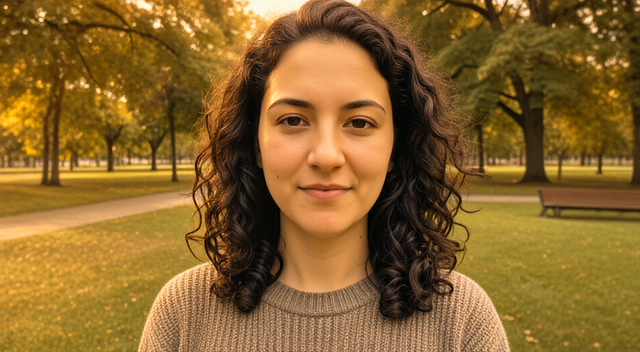

portrait-woman.jpg · person · reference
Make this photo warmer in tone (golden, like late afternoon light); change nothing else: same person, pose, framing and background. · 10 credits · 1 turn(s)
turn 1: pictures · edit_image · ready · I’ll give the photo a warmer, golden late-afternoon tone while keeping the person, pose, framing, and background unchanged.
| parameter | value | source | from |
|---|---|---|---|
| edit | Warm the photo’s tones with golden, late-afternoon-style light. | user | “Make this photo warmer in tone (golden, like late afternoon light)” |
| keep | Keep the same person, pose, framing, and background; change nothing other than the warmth of the tones. | user | “change nothing else: same person, pose, framing and background” |
| exact_words | [] | derived | This is a photo color adjustment with no requested text. |
ok · model qwen-image-2.1 · cost 10

Warm only the photo’s color tones with a subtle golden, late-afternoon-style cast. Keep the person’s identity, expression, pose, clothing, framing, background, aspect ratio, and all details exactly as they are. Preserve the existing light direction, intensity, and shadows; change only the color warmth. Do not add, remove, retouch, or rearrange anything.
FAIL · Apply only a golden warm color adjustment to the original photo, preserving its exact square dimensions, framing, person, pose, facial details, hair, clothing, and background without regenerating any content. · lettering: No words required; none visible. · artefacts: The square photo is changed to a wide landscape composition; the person is smaller in frame, facial and hair details are altered, and the background trees, path, and bench are repositioned or regenerated. Strong golden warmth is added.